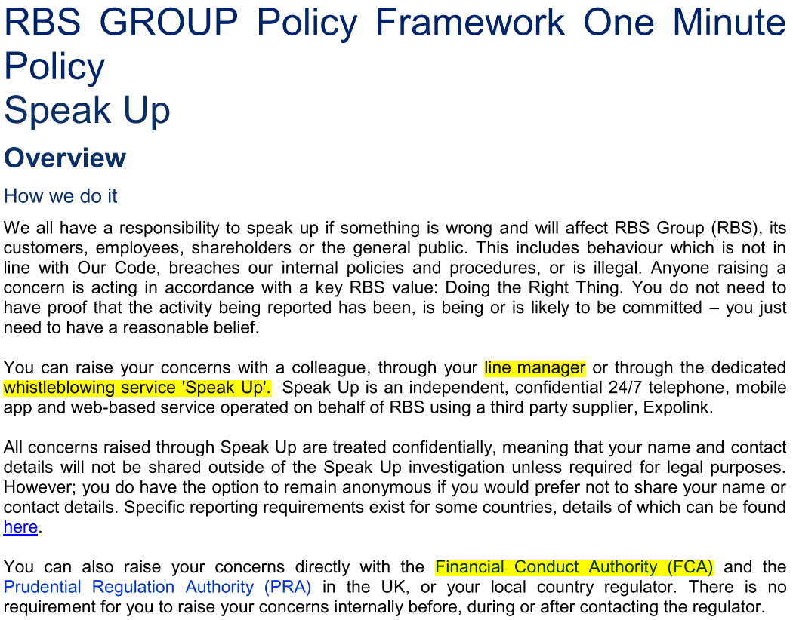

<!-- -->  ## Business Integrity, Ethics and Conduct at RB
## Questions to think about... **If I were an employee at RB and had witnessed some non-compliant business practice being carried out:** 1. How and who would I choose to report the matter to? 2. What could RB do to give me the confidence as an employee in reporting the matter? 3. What would be the potential barriers to raising my concerns?
### 1. How and who would I choose to report a matter to? <!--  --> RB's 2019 **"Speak Up"** Policy- "reasonable belief" that RB's Code of Conduct, internal policies or UK law has been breached. Reporting options include: 1. Line Manager. 2. Whistle Blowing Service. 3. Financial Conduct Authority (FCA). **Need for objectivity.**
<!--  -->  <!--  -->
### 2. What could RB do to give me the confidence as an employee in reporting the matter? "[According to a 2017 survey](https://uk.reuters.com/article/uk-britain-whistleblowing/britain-remains-hostile-to-whistleblowers-statistics-show-idUKKBN1DL1UV), the percieved level of senior management support for whistleblowers has dropped to 38% from 51% (in 2014) in Britain"
### 2. What could RB do to give me the confidence as an employee in reporting the matter? 1. Respect for **confidentiality/GDPR.** 2. Outline the **steps** to be taken with regards to the matter. 3. Provide a **date** when I could expect to hear about the outcome of the matter. 4. Be **open and transparent** at all times. 5. Provide a route of **appeal** where necessary and reasonable.
### 3. What would be the potential barriers to raising my concerns? 1. Adversity within the workplace: * Victimisation. * Harassment. * Discrimination. * Micro-agression. 2. Break down in a supportive team mentality. 3. Ostracization. **SOLUTION = Reassurance.**
### In summary ... 1. Report concern to line-manager, Speak Up Whilstle Blowing Service or FCA. 2. Ensure respect for confidentiality in investigation and keep complainant updated. 3. Provide reassurance to reporting employee. **I welcome questions and discussion.**
Thank you for your attention!